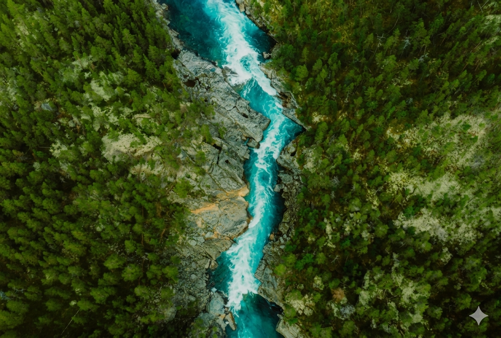
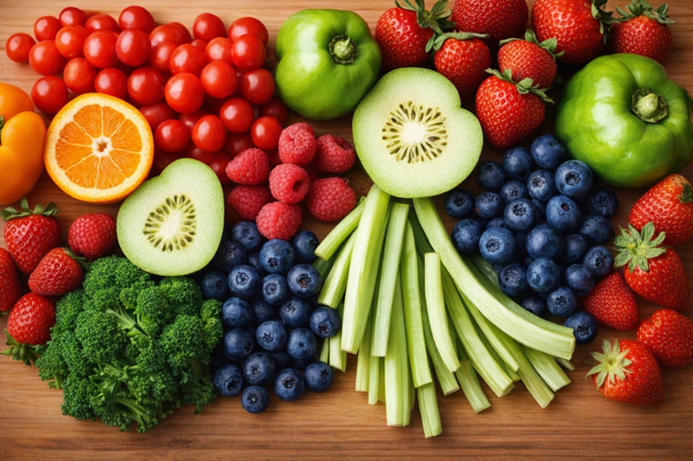
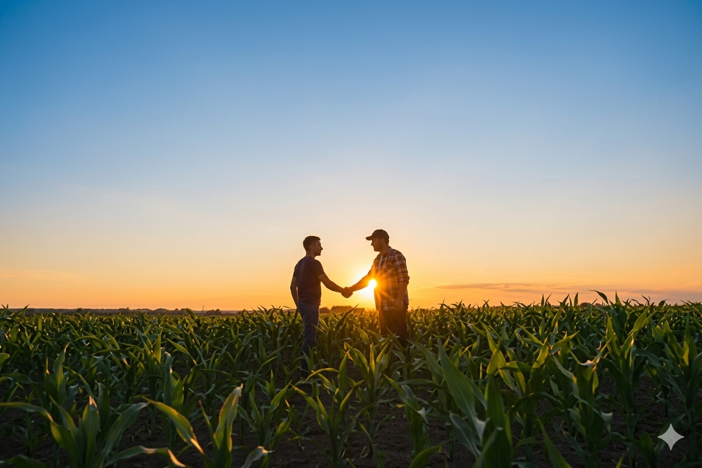

¿Quiénes somos?
GreenLink es una plataforma diseñada para conectar a los agricultores directamente con los ciudadanos, eliminando cualquier tipo de intermediario.
Nuestro objetivo es que los alimentos frescos de calidad dejen de ser una compra puntual para convertirse en un alimento de base diaria, accesible y transparente.
Para agricultores: Suscripción de 4,99€/mes (¡3 meses gratis para nuevos usuarios!).
Para compradores: Acceso a productos locales, valoraciones reales y total transparencia.
¿Qué problemas resolvemos?
Intermediarios
Reducimos la dependencia de los intermediarios en la cadena de suministro agrícola, aumentando los beneficios del agricultor.
Falta de espacio
Solucionamos la falta de espacio en los hogares urbanos para tener un huerto personal, trayendo el huerto a tu casa.
Tecnología
Combatimos el escaso uso de las nuevas tecnologías en el campo, modernizando la conexión agricultor-cliente.
Nuestro impacto en el medio ambiente
Al fomentar el consumo de proximidad, reducimos drásticamente la huella de carbono asociada al transporte y al modelo de distribución tradicional.
Compromiso con el Pacto Verde Europeo
En GreenLink, nuestra misión se alinea con la estrategia "De la Granja a la Mesa" del Pacto Verde Europeo. Trabajamos para crear un sistema alimentario justo, saludable y respetuoso con el medio ambiente.

1. Fomento de la economía circular y la reducción de intermediarios
Promueve la sostenibilidad económica y el apoyo a las economías locales. GreenLink facilita la compra directa de productos agrícolas, eliminando intermediarios, lo cual reduce los costes para los consumidores y aumenta la rentabilidad de los agricultores locales. Este modelo de economía circular permite a los productores obtener un beneficio más grande, favoreciendo la sostenibilidad económica del sector agrícola.

2. Acceso a alimentos sostenibles y frescos
La plataforma de GreenLink alienta las familias a consumir alimentos frescos y saludables de fuentes locales, lo cual disminuye la necesidad de importar productos y contribuye a la reducción de la huella de carbono, un objetivo fundamental del Pacto Verde Europeo. Además, el consumo local minimiza el transporte y, por lo tanto, las emisiones de gases de efecto invernadero.

3. Creación de un sistema de confianza y transparencia
El Pacto Verd promueve la sostenibilidad y la transparencia en la producción. La plataforma de GreenLink permite a los agricultores mostrar imágenes de sus instalaciones y compartir detalles de sus productos, creando así un sistema de confianza entre productores y consumidores. Este enfoque en la transparencia fomenta un consumo informado, alineado con los valores del Pacto Verde Europeo.